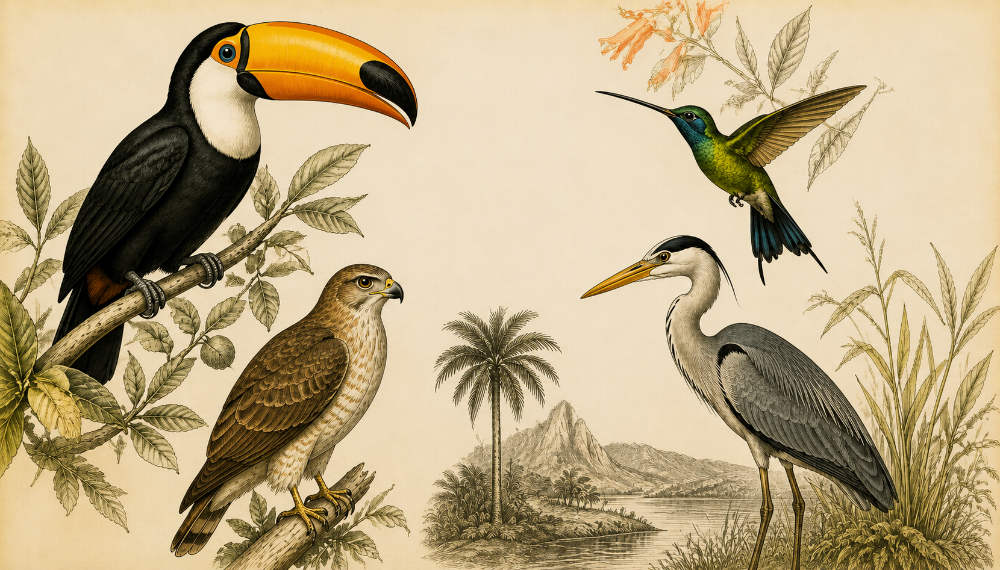
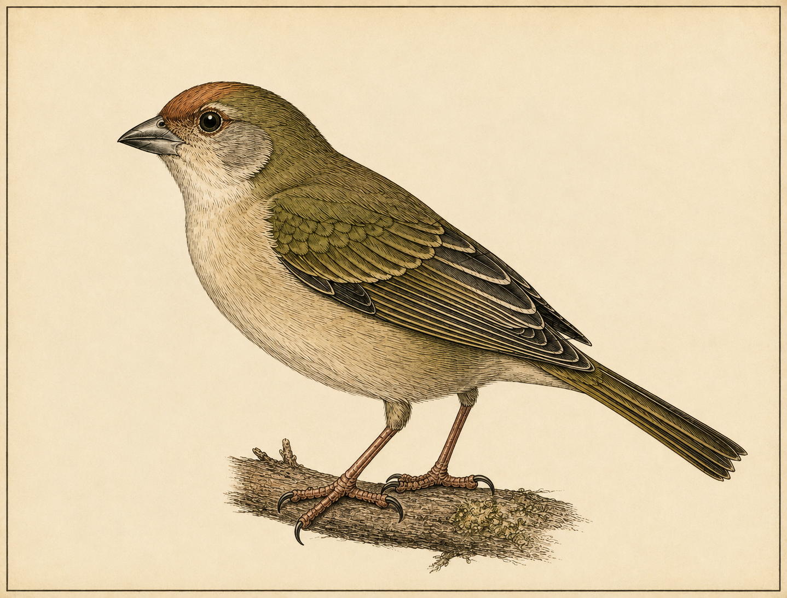
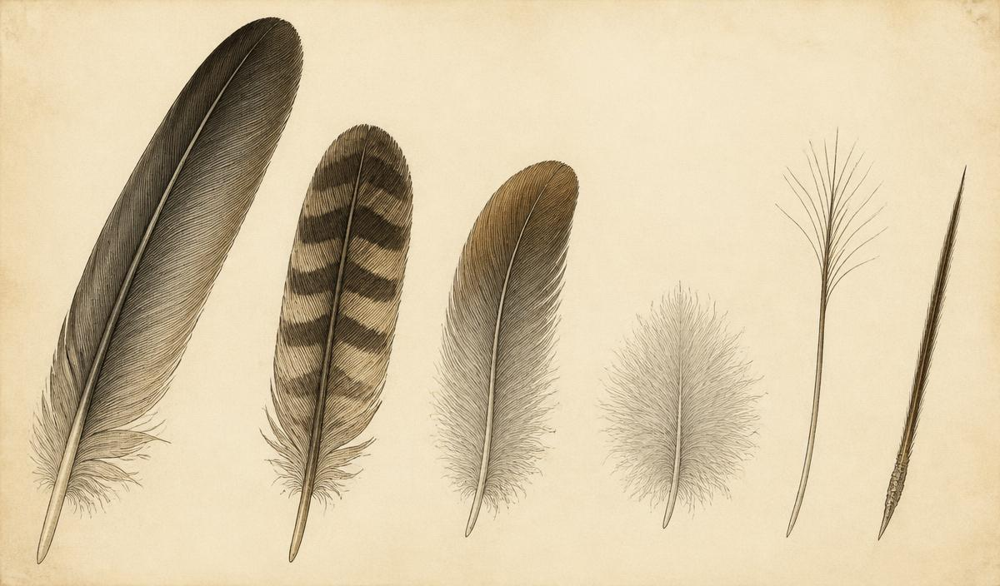
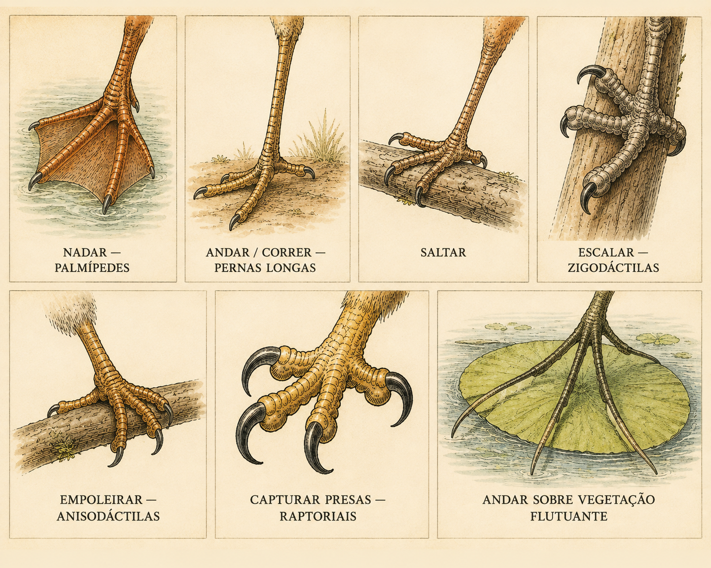
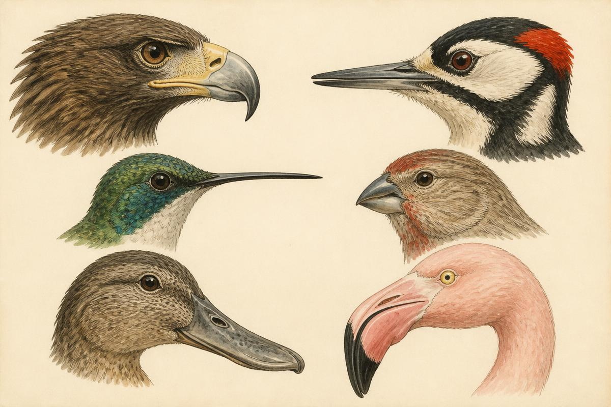
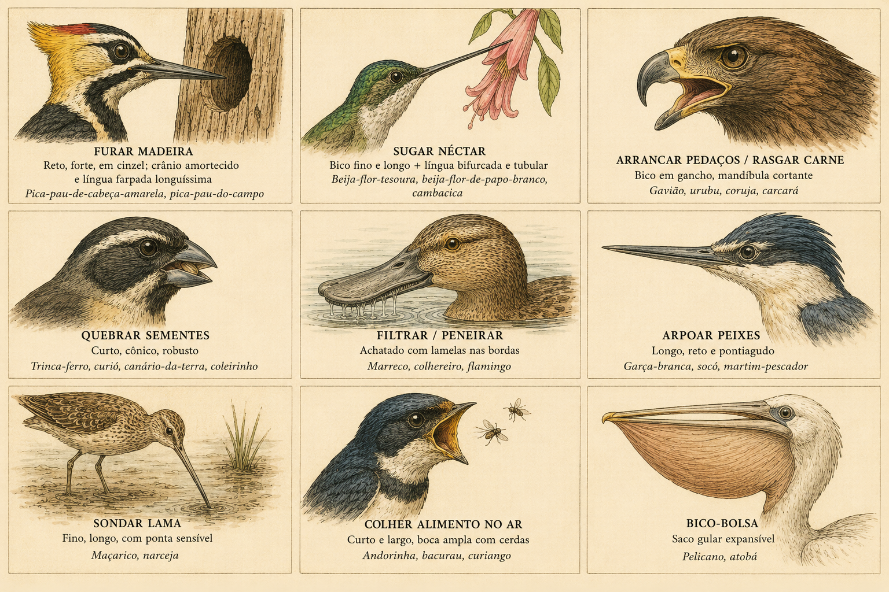
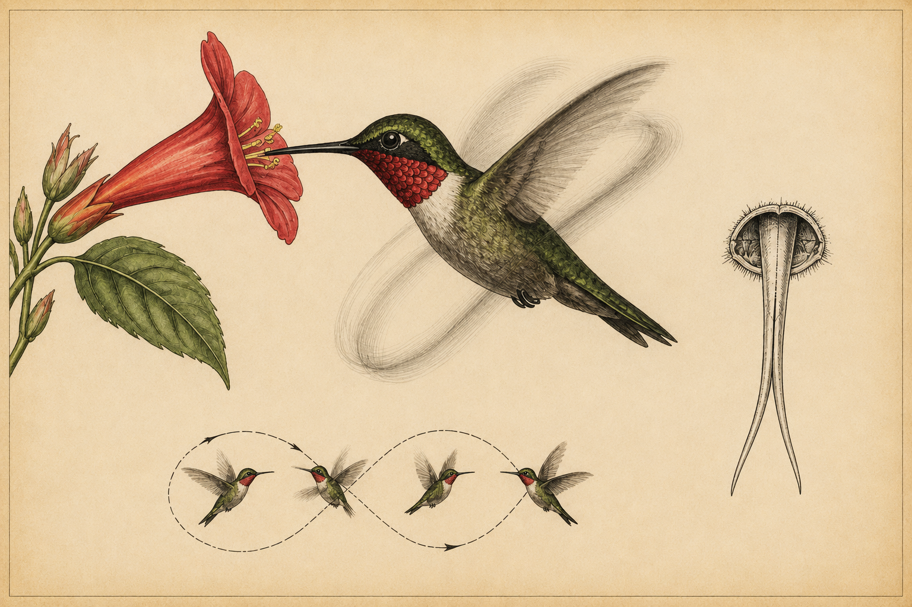
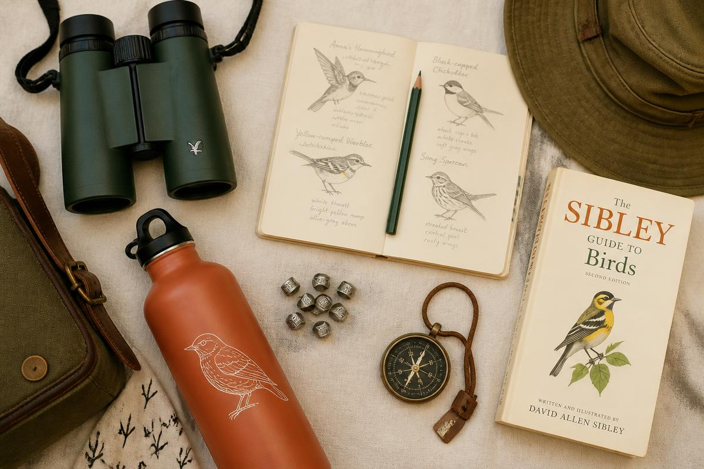

Esta especialidade só se completa sobre outra: a Especialidade de Aves. Ela é o alicerce — classificação, o que define uma ave, alimentação, ninhos, ovos e o primeiro contato com a observação de campo.
Todo o conteúdo do requisito introdutório está reunido no artigo de apoio abaixo. Vale reler antes de encarar as adaptações, a migração e as listas de campo desta versão avançada.
No Brasil, a fauna silvestre é propriedade do Estado. Capturar, manter em cativeiro, transportar, comprar ou vender aves silvestres sem autorização é crime — não é “costume”, é infração ambiental com pena prevista.
Declara a fauna silvestre e seus ninhos, abrigos e criadouros naturais como propriedade do Estado. Proíbe caça profissional, comércio de espécimes e produtos derivados da fauna nativa.
Art. 29: matar, perseguir, caçar, apanhar ou utilizar espécimes da fauna silvestre sem permissão → detenção de 6 meses a 1 ano e multa. A pena aumenta se a espécie for ameaçada, se for época de defeso ou se o ato ocorrer à noite.
Define as multas administrativas: cobrada por espécime, dobrada para espécies ameaçadas e triplicada para as constantes da lista oficial de extinção.
O IBAMA fiscaliza e autoriza criadouros, o SISPASS registra criadores amadores de passeriformes, e o ICMBio (via CEMAVE) coordena pesquisa, anilhamento e conservação de aves.
Garante a todos o meio ambiente ecologicamente equilibrado e proíbe práticas que coloquem em risco a função ecológica da fauna ou provoquem extinção de espécies.
CITES controla o comércio internacional de espécies ameaçadas; a Convenção da Biodiversidade e a Convenção de Ramsar (áreas úmidas) protegem habitats críticos para aves migratórias.
Um relatório completo deve conter: (1) as leis citadas acima com número e ano; (2) o que cada uma proíbe e qual a pena; (3) quais órgãos fiscalizam; (4) como denunciar — Linha Verde do IBAMA: 0800 61 8080, ou a Polícia Militar Ambiental do seu estado; (5) uma conclusão pessoal sobre o tráfico de animais silvestres, que movimenta bilhões por ano e tem as aves canoras como principais vítimas no Brasil.

Identificar as partes na prancha é o requisito; entender o que cada uma faz é o que transforma a lista em conhecimento.
Bico (maxila + mandíbula), cera (base carnosa em rapinantes e pombos), narinas, loro (entre o olho e o bico), coroa, nuca, auriculares, malar e garganta.
Dorso, escapulares, peito, ventre, flancos e uropígio — onde fica a glândula uropigiana, que produz o óleo impermeabilizante.
Rêmiges primárias (propulsão), secundárias (sustentação), terciárias, coberteiras e álula — o “dedo polegar” que evita o estol em voo lento.
Retrizes (penas timoneiras), supracaudais e infracaudais; tarso, dedos, hálux (dedo posterior) e garras.
Esterno com quilha (âncora dos músculos peitorais), fúrcula (a “forquilha”, mola elástica do voo), ossos pneumáticos, 9 sacos aéreos, siringe (órgão do canto, na base da traqueia) e moela, que tritura o alimento no lugar dos dentes.
A pena é uma estrutura de queratina, leve, flexível, reparável e multifuncional. Nenhum outro material biológico faz tanto com tão pouca massa.

As rêmiges formam uma superfície aerodinâmica contínua: as bárbulas se prendem por minúsculos ganchos, criando uma lâmina que resiste ao ar e volta a “fechar” quando desalinhada.
A plumagem prende ar junto ao corpo. Como a ave é endotérmica (39–43 °C), esse colchão de ar é o que permite sobreviver do Ártico à Antártida — e eriçar as penas aumenta o isolamento no frio.
Óleo da glândula uropigiana, espalhado na limpeza diária, mantém a água fora. Sem isso, aves aquáticas encharcariam e morreriam de hipotermia.
Padrões crípticos escondem fêmeas chocando e filhotes. O curiango e a socó-boi praticamente desaparecem contra folhas secas e juncos.
Cores estruturais e pigmentares sinalizam saúde, idade, sexo e espécie. O pavão, o galo-da-serra e o beija-flor exibem plumagens que são anúncios biológicos.
Barreira contra sol, atrito e ferimentos; as cerdas ao redor do bico funcionam como “bigodes” táteis em aves que caçam insetos no ar.
• As cores azuis das aves quase nunca são pigmento: são cor estrutural, produzida pela microestrutura da pena que espalha a luz. • Um cisne pode ter mais de 25.000 penas; um beija-flor, menos de 1.000. • A muda é a troca periódica das penas gastas — a maioria das aves troca gradualmente para nunca perder o voo, mas patos e gansos mudam todas de uma vez e ficam semanas sem voar. • Penas de dinossauros não-avianos comprovam que a pena surgiu antes do voo, provavelmente como isolante térmico e sinal visual.
Pés e bicos são as ferramentas da ave. Olhando só para eles, um observador treinado deduz onde a ave vive e do que se alimenta — foi exatamente essa lógica que Darwin viu nos tentilhões de Galápagos.
| Adaptação | Estrutura | Exemplos brasileiros |
|---|---|---|
| Nadar — palmípedes | Membrana interdigital (remo); pernas recuadas no corpo | Marreco, pato-do-mato (Cairina moschata), gaivota, biguá (lobadas), mergulhão |
| Andar / correr — pernas longas | Tarsos longos, dedos robustos, hálux reduzido | Ema (Rhea americana), seriema, quero-quero, garça, jaburu |
| Saltar | Dedos curtos e fortes, deslocamento aos pulinhos | Pardal, sabiá-laranjeira, tico-tico |
| Escalar — zigodáctilas | 2 dedos à frente e 2 atrás, formando pinça | Pica-pau, tucano, papagaio, arara, cuco |
| Empoleirar — anisodáctilas | 3 dedos à frente, 1 atrás; tendão que trava sozinho ao dobrar | Bem-te-vi, canário, sanhaço, sabiá — a maioria dos Passeriformes |
| Capturar presas — raptoriais | Garras curvas e afiadas, tarso musculoso | Gavião-carijó, carcará, coruja-buraqueira, harpia |
| Andar sobre vegetação flutuante | Dedos e unhas extremamente longos que distribuem o peso | Jaçanã (“piaçoca”) |

| Adaptação | Formato | Exemplos |
|---|---|---|
| Furar madeira | Reto, forte, em cinzel; crânio amortecido e língua farpada longuíssima | Pica-pau-de-cabeça-amarela, pica-pau-do-campo |
| Sugar néctar | Bico fino e longo + língua bifurcada e tubular | Beija-flor-tesoura, beija-flor-de-papo-branco, cambacica |
| Arrancar pedaços / rasgar carne | Bico em gancho, mandíbula cortante | Gavião, urubu, coruja, carcará |
| Quebrar sementes | Curto, cônico, robusto | Trinca-ferro, curió, canário-da-terra, coleirinho |
| Filtrar / peneirar | Achatado com lamelas nas bordas | Marreco, colhereiro, flamingo |
| Arpoar peixes | Longo, reto e pontiagudo | Garça-branca, socó, martim-pescador |
| Sondar lama | Fino, longo, com ponta sensível | Maçarico, narceja |
| Colher alimento no ar | Curto e largo, boca ampla com cerdas | Andorinha, bacurau, curiango |
| Bico-bolsa | Saco gular expansível | Pelicano, atobá |



Néctar (energia rápida) e pequenos artrópodes: mosquitinhos, pulgões e aranhas, que fornecem a proteína. Alimentam-se a cada 10 a 15 minutos, visitando de 1.000 a 2.000 flores por dia, e consomem por dia o equivalente a cerca de metade do próprio peso em açúcares — em alguns casos até 8 vezes o peso corporal em líquido.
Porque sua agilidade é a defesa: aceleram, param e recuam no ar em frações de segundo, o que torna a captura praticamente impossível para mamíferos e aves maiores. Somam a isso um temperamento extremamente territorial — beija-flores enfrentam e expulsam gaviões e tucanos que se aproximem do seu território de flores. Não têm predadores aéreos habituais que compensem o esforço de caçá-los.
Nas outras aves a asa gera sustentação apenas na descida. No beija-flor, o ombro gira quase 180° e a asa descreve um “oito” horizontal: gera força tanto no movimento para frente quanto para trás. Por isso ele paira parado, sobe na vertical, voa de lado e é a única ave capaz de voar de ré.
Longa, extensível muito além do bico e bifurcada na ponta, com as bordas enroladas formando dois canais tubulares franjados. Ela não funciona como canudo de sucção: ao tocar o néctar, as franjas se abrem e se fecham como uma armadilha elástica, capturando o líquido por capilaridade a cerca de 13 vezes por segundo.
Em noites frias entram em torpor, derrubando o coração a ~50 bpm para economizar energia. O menor deles, o beija-flor-abelha de Cuba, pesa 1,8 g. O beija-flor-ruivo cruza 800 km do Golfo do México sem parar. No Brasil há cerca de 85 espécies, e eles são polinizadores essenciais de dezenas de plantas nativas.
A razão principal. Quando o inverno boreal congela insetos e sementes, as aves seguem a abundância rumo ao sul — não fogem do frio em si, fogem da fome.
O verão de altas latitudes oferece dias longuíssimos, explosão de insetos e menos predadores e parasitas: condições ideais para criar filhotes rapidamente.
A mudança na duração do dia dispara hormônios que provocam a Zugunruhe — a inquietação migratória — e o acúmulo de gordura antes da partida.
Dispersar reduz a disputa por território e ninhos numa mesma área.
Nos trópicos, muitas migrações são locais e seguem o regime de chuvas e a cheia dos rios (caso de muitas aves do Pantanal e do Cerrado).
Espécies de montanha sobem e descem a serra conforme a estação, migrando poucos quilômetros na horizontal, mas centenas de metros na vertical.
| Espécie | Nome científico | Origem (reprodução) | Destino (invernada) |
|---|---|---|---|
| Maçarico-de-papo-vermelho | Calidris canutus rufa | Ártico canadense | Lagoa do Peixe (RS) e Terra do Fogo |
| Maçarico-de-sobre-branco | Calidris fuscicollis | Tundra do Ártico americano | Sul do Brasil, Uruguai e Argentina |
| Trinta-réis-boreal | Sterna hirundo | América do Norte e Europa | Litoral brasileiro, do Nordeste ao Sul |
| Batuíra-de-bando | Charadrius semipalmatus | Norte do Canadá e Alasca | Costa do Brasil até a Patagônia |
| Andorinha-do-campo (púrpura) | Progne subis | Estados Unidos e Canadá | Amazônia e Centro-Oeste do Brasil |
| Suiriri-boreal | Tyrannus tyrannus | América do Norte | Amazônia e oeste do Brasil |
| Sabiá-da-praia / caneleiro | Coccyzus americanus | Estados Unidos e México | Norte e centro da América do Sul |
| Tesourinha | Tyrannus savana | Sul do Brasil, Argentina e Paraguai | Amazônia e Venezuela (migrante austral) |
| Andorinha-serradora | Stelgidopteryx ruficollis | Sul e Sudeste do Brasil | Norte do Brasil e Amazônia |
| Trinta-réis-ártico | Sterna paradisaea | Ártico (Groenlândia, Canadá) | Antártida — a maior migração do planeta |
| Bacurau-tesoura / juruviara | Vireo chivi | Sul da América do Sul | Bacia amazônica |
| Cegonha-americana | Mycteria americana | Pantanal e Sudeste dos EUA | Deslocamentos amplos pelas Américas |
O trinta-réis-ártico percorre cerca de 70.000 km por ano entre o Ártico e a Antártida — ao longo da vida, o equivalente a três viagens de ida e volta à Lua. O maçarico-de-bico-torto (Limosa lapponica) já foi registrado voando 13.560 km sem escala, em 11 dias sem comer, beber ou pousar.
Anilhamento é a marcação individual de aves com uma anilha metálica (ou plástica colorida) no tarso, contendo número único e endereço do centro de pesquisa. No Brasil, é coordenado pelo CEMAVE/ICMBio e só pode ser feito por anilhadores licenciados.
Usam a posição do Sol corrigida pelo relógio biológico interno, que compensa o movimento do astro ao longo do dia. Muitas também enxergam o padrão de luz polarizada no céu, útil em dias nublados e no crepúsculo.
Migrantes noturnos aprendem, ainda jovens, o eixo de rotação do céu em torno da estrela polar. Experimentos clássicos em planetário mostraram aves reorientando o voo quando as constelações eram giradas.
Detectam o campo magnético da Terra por criptocromos nos olhos (magnetorrecepção química, sensível à luz azul) e por cristais de magnetita no bico, que informam a intensidade do campo — uma espécie de “latitude magnética”.
Seguem marcos geográficos — litorais, cadeias de montanhas, grandes rios — e há forte evidência de mapas olfativos em pombos e aves marinhas, que reconhecem o “cheiro” de regiões.
Aves adultas experientes conduzem os bandos; gansos e cegonhas aprendem a rota voando com os pais. Infrassons de longa distância também ajudam a reconhecer regiões.
Modelo preenchido do diário de observação das aves. Substitua pelas suas próprias observações — data, local e habitat de cada registro seu.
| # | Espécie | Data | Local | Habitat |
|---|---|---|---|---|
| 1 | Bem-te-vi (Pitangus sulphuratus) | 04/03 | Quintal de casa | Área urbana arborizada |
| 2 | Sabiá-laranjeira (Turdus rufiventris) | 04/03 | Praça central | Jardim urbano |
| 3 | Rolinha-roxa (Columbina talpacoti) | 04/03 | Calçada do bairro | Solo urbano |
| 4 | Sanhaço-cinzento (Thraupis sayaca) | 05/03 | Mangueira do quintal | Copa de árvore frutífera |
| 5 | João-de-barro (Furnarius rufus) | 05/03 | Poste da rua | Campo/urbano |
| 6 | Tico-tico (Zonotrichia capensis) | 06/03 | Terreno baldio | Campo aberto |
| 7 | Quero-quero (Vanellus chilensis) | 06/03 | Campo de futebol | Campo gramado |
| 8 | Garça-branca-grande (Ardea alba) | 08/03 | Margem do rio | Rio / brejo |
| 9 | Biguá (Nannopterum brasilianum) | 08/03 | Represa | Lago |
| 10 | Martim-pescador-grande (Megaceryle torquata) | 08/03 | Galho sobre o rio | Mata ciliar |
| 11 | Anu-preto (Crotophaga ani) | 09/03 | Pasto vizinho | Campo com arbustos |
| 12 | Carcará (Caracara plancus) | 09/03 | Beira de estrada | Campo aberto |
| 13 | Urubu-de-cabeça-preta (Coragyps atratus) | 09/03 | Céu do bairro | Sobrevoo urbano |
| 14 | Gavião-carijó (Rupornis magnirostris) | 10/03 | Poste na rodovia | Borda de mata |
| 15 | Beija-flor-tesoura (Eupetomena macroura) | 10/03 | Jardim de casa | Jardim florido |
| 16 | Beija-flor-de-papo-branco (Amazilia fimbriata) | 10/03 | Ipê do quintal | Jardim |
| 17 | Periquitão-maracanã (Psittacara leucophthalmus) | 11/03 | Bando ao entardecer | Área urbana arborizada |
| 18 | Maritaca / maitaca-verde (Pionus maximiliani) | 11/03 | Bosque do parque | Mata secundária |
| 19 | Tucano-toco (Ramphastos toco) | 12/03 | Cerrado do parque | Cerrado |
| 20 | Pica-pau-do-campo (Colaptes campestris) | 12/03 | Cupinzeiro no campo | Campo sujo |
| 21 | Alma-de-gato (Piaya cayana) | 12/03 | Trilha do bosque | Bosque |
| 22 | Andorinha-doméstica (Pygochelidon cyanoleuca) | 13/03 | Fiação da praça | Ar / urbano |
| 23 | Curicaca (Theristicus caudatus) | 13/03 | Pasto alagado | Campo úmido |
| 24 | Frango-d'água-comum (Gallinula galeata) | 14/03 | Lagoa do parque | Lago com macrófitas |
| 25 | Jaçanã (Jacana jacana) | 14/03 | Lagoa do parque | Vegetação flutuante |
| 26 | Suiriri (Tyrannus melancholicus) | 15/03 | Fio elétrico | Área aberta |
| 27 | Coleirinho (Sporophila caerulescens) | 15/03 | Capinzal | Campo com gramíneas |
| 28 | Canário-da-terra (Sicalis flaveola) | 15/03 | Praça | Solo urbano |
| 29 | Corujinha-do-mato (Megascops choliba) | 16/03 | Fundo do quintal, à noite | Mata próxima |
| 30 | Coruja-buraqueira (Athene cunicularia) | 16/03 | Campo do aeroporto | Campo aberto seco |
| Espécie | Como soa |
|---|---|
| Bem-te-vi (Pitangus sulphuratus) | “bem-te-vi!” — três sílabas ascendentes e estridentes |
| João-de-barro (Furnarius rufus) | Série de notas aceleradas em dueto do casal |
| Quero-quero (Vanellus chilensis) | “tero-tero-tero” de alarme, em geral ao anoitecer |
| Sabiá-laranjeira (Turdus rufiventris) | Canto flauteado, melodioso e pausado, ao amanhecer |
| Anu-branco (Guira guira) | Assobio agudo e arrastado, em bando |
| Corujinha-do-mato (Megascops choliba) | Trinado curto terminando em duas notas: “trrrr-pu-pú” |
| Curiango (Nyctidromus albicollis) | Assobio noturno “uí-uí-uí” vindo do chão |
| Juriti-pupu (Leptotila verreauxi) | Sopro grave e triste, como um assobio em garrafa |
| Alma-de-gato (Piaya cayana) | “ki-ki-ki-á” gutural, típico de mata fechada |
| Pica-pau-do-campo (Colaptes campestris) | Gargalhada estridente + tamborilar rítmico no tronco |
Grave os cantos com o celular e confira depois no WikiAves, no Xeno-canto ou no app Merlin Bird ID (que reconhece o canto em tempo real). Anote sempre horário e ambiente: muitas espécies só cantam ao amanhecer, e o mesmo pássaro pode ter canto territorial, chamado de contato e grito de alarme completamente diferentes.
Lista de referência para montar a coleção ilustrada do requisito. As 50 primeiras são típicas do Brasil; as 10 finais são estrangeiras, completando o conjunto.
Use fotos próprias, recortes de revista ou impressões de bancos livres (WikiAves, Wikimedia Commons). Cada ficha deve trazer nome popular, nome científico em itálico, família, habitat e uma curiosidade. Organizar por ordem taxonômica (do Comitê Brasileiro de Registros Ornitológicos) impressiona a banca e ensina a lógica da classificação.
O item final é prático: sair em grupo, observar e relatar. A melhor janela é do amanhecer às 9h, quando a atividade e o canto são máximos; o fim da tarde é a segunda melhor.

1. Data, horário de início e fim, local e coordenadas.
2. Clima e temperatura.
3. Participantes e responsável.
4. Descrição do percurso e dos habitats atravessados.
5. Lista das espécies vistas e ouvidas, com número de indivíduos e comportamento
observado.
6. Fotos e desenhos de campo.
7. Materiais utilizados.
8. Conclusão pessoal: o que aprendeu, dificuldades e uma reflexão sobre a criação
(Gênesis 1:20-22 e Mateus 6:26).
Muitas aves enxergam ultravioleta: veem marcas em penas e frutos invisíveis para nós. O gavião distingue detalhes a 3 km.
Fragatas e maçaricos dormem com metade do cérebro por vez, em voo, mantendo um olho aberto.
Corvos fabricam ferramentas e reconhecem rostos humanos; papagaios associam palavras a significados.
O esqueleto de uma fragata pesa menos que suas penas.
O falcão-peregrino chega a 390 km/h em mergulho — o animal mais rápido do planeta.
Perda de habitat, tráfico, gatos domésticos, colisão com vidros e agrotóxicos são as maiores causas de declínio.
Plante nativas frutíferas, ofereça bebedouro limpo (sem açúcar em excesso), não compre aves silvestres, denuncie o tráfico.
Registre suas observações no WikiAves e no eBird: seus dados viram pesquisa de verdade.